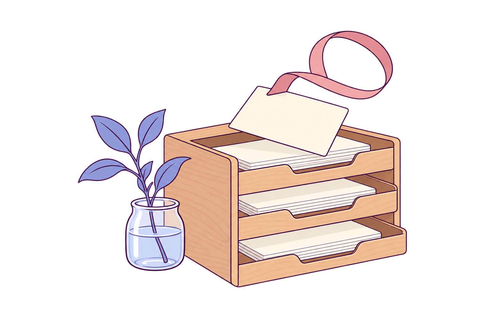

Fictional samples · local only. Agent entries are snapshots; nothing is sent.
A calm home base for open loops.

Loading local state…
Lands in Inbox as a title only. No dates, no scores. Press C to come back here.
Every action is also a button or select, sized for touch. Nothing needs a hover or a drag.